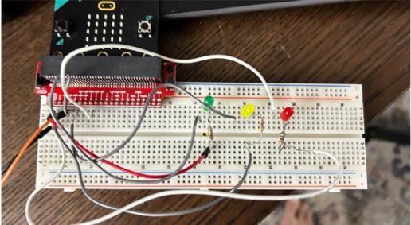

| Home | Traffic Light (you are here) | Red and White LED + Push Button | ||
| Red and White LED | ||||
|  | ||||
R&Y Traffic Light |
||||
What does this system do? |
||||
This system works by switching from turning the green light on for 30 seconds, the yellow light on for 10 seconds, then turning on the red light for 30 seconds once the button is pushed When the light turns green, a sound will play letting the visually impared know that is it time to cross. |
||||